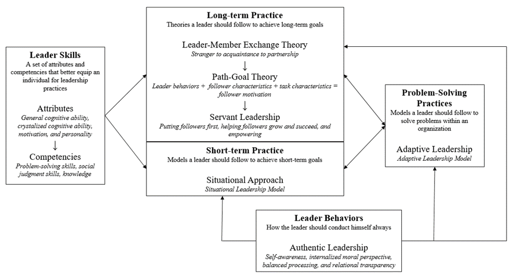

Michelle the Leader
Leadership Theory
In fall 2016, I took a course called Leadership Theory & Practice, the flagship course of my Leadership Studies minor. In studying major leadership theories and their real world applications, I developed a better understanding of my personal leadership theory. Below is a diagram of my personal leadership theory. You can read a detailed analysis of my personal leadership theory here.
Leadership in Practice
Leadership experiences listed on this page include:
- College of Natural Science & Mathematics
- Bonner Leaders Program
College of Natural Science & Mathematics
Ambassador
In spring 2016, I was chosen to serve as an ambassador for the College of Natural Science and Mathematics. As an ambassador, I represent the college and assist with the recruitment and retention of students within the college. Being an ambassador helped me develop my communication skills and made me realize my love for developing a community within an organization. I learned that I enjoy talking to prospective students and helping current students find new opportunities for success.
Senator
Even though I enjoyed my experience as an ambassador, I envisioned a college with a robust research program and a vibrant student community. In order to pursue these initiatives, I believed I required a platform in which I could reach more students. A year later in spring 2017, I ran for and won the senator seat for the College of Natural Science and Mathematics in the university's Student Government Association. I will be inducted in April 2017 and I plan to use my position to help other students succeed.
Bonner Leaders Program
As a freshman, I joined the Bonner Leaders Program, a service-learning organization dedicated to alleviating poverty in the local Third Ward community. In fall 2015, I served as a writing tutor and mentor to four seventh graders at the local KIPP Intrepid College Prep School as part of a program called Writing to Inspire Successful Education (WISE). As part of my commitment to the program, I dedicate ten hours each week to editting students' papers through a digital platform. This experience made me realize that I love to mentor others to find their own success as well as recognize some of the issues that low-income families face.
In fall 2016, I began to serve as part of the Executive Committee for the WISE project. In spring 2016, I lead the expansion of the program to a second school, KIPP Liberation Middle School. During this time, I developed and recruited a group of students to serve as a Data Team for the WISE project. This body collects and analyzes student data to use in the WISE Program Evaluation.
Find out more about the WISE Program Evaluation here.